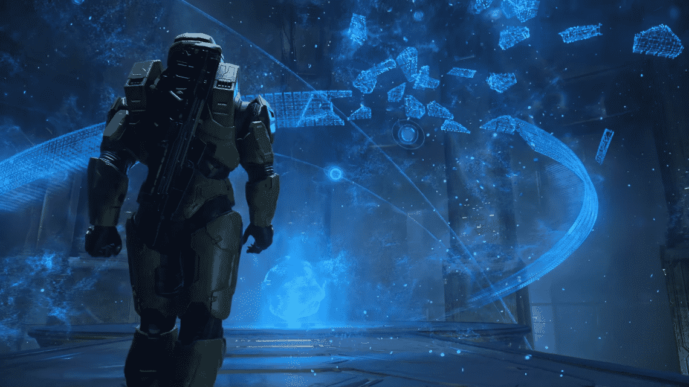

Chapter 3
I had thought earlier that I was going to quit after the first level, perhaps. But now, I actually I wanted to experience this campaign, at least once, even if it meant tolerating my way through the gameplay. So, with the difficulty set on easy, I proceeded on with the game’s second mission, called “Halo”.
The environments, continued to awe me, the enemy ships that hovered down from above looked so high tech and beautiful, while still very alien. I wanted to know what it was like to be inside those ships in real life. The beam towers and other structures on the ring-world also looked alien but aesthetically different from the enemy ships. The environment drew me in. I fought the alien species with my troops, drove a vehicle, and found a mysterious building. I thought this fascility belonged to the enemy aliens, the covenant as they were called. Of course, that wasn’t the case I would later learn. Nonethe less, this structure alone made me think of what these aliens home planet looked like. What their technology is like. Their principles, morals, ideals, everything. Perhaps, because I didn’t like shooters, I spent a lot more time enjoying the environment.
It had been hours, and I was still on mission 2. I was going slow admiring the map and I kept dying and had to take cover a lot because I was so bad at aiming and hitting the enemies. So I decided to save and quite for the night. But surprisingly, or not so surprisingly, I started the game back up the next day and continued on with mission 2.
But interestingly enough, I didn’t find the gameplay to be that bad. It definitely didn’t feel as frustrating as it did on other shooters, including Half-Life 2. I still wasn’t a fan of the FPS genre, but this I could tolerate, especially to admire the environment and the mystery that Halo: Combat Evolved brought.
I had finished mission two, and I was enjoying it to my own surprise. I still wished I could avoid combat. I always enjoyed first person games, though, especially Portal and its sequel, so I was well versed with the using the mouse & keyboard to move around. In the level truth and reconciliation, I got a view of the Halo ring at night. Once again the sense of awe and wonder kicked in. In this third level, I was on a cliff high up. And I spent a lot of time looking down and the cloud decks, daydreaming. Then I saw the cruiser.
Oh, and did that thing startle me or what? Initially assuming it part of the black sky, I was taken aback after suddenly noticing what appeared like a giant, hovering, black blob covering the moon light. Yes, I had either missed or forgotten the opening line of this level, where Cortana mentions the Covenant cruiser, Truth and Reconciliation. So seeing this large spaceship was something I wasn’t expecting at all.
So I kept looking, observing its various details. I could see little yellow dots, almost looking like starlight. Those must be windows, I thought, like how windows of city buildings from afar like little tiny dots. Then I began to, once again, began to let my thoughts wonder. What was it like, to live on a high tech space ship of the future? Man, those aliens must be lucky to be able to ride that thing! I imagined what might have been on the other side of one of those lit windows. Was there a cabin, a futuristic cabin, where an alien was sleeping on their futuristic bed? Was it a dining hall, where alien people were discussing whatever alien people discuss? And speaking of dining hall, what was their food like? How did they live their daily lives? Were the alien people on that spaceship missing their loved ones back in their home planet?
So, you can probably guess how excited I was when I got to this part! Click here to continue to chapter 4.
External Links
Thanks for visiting!